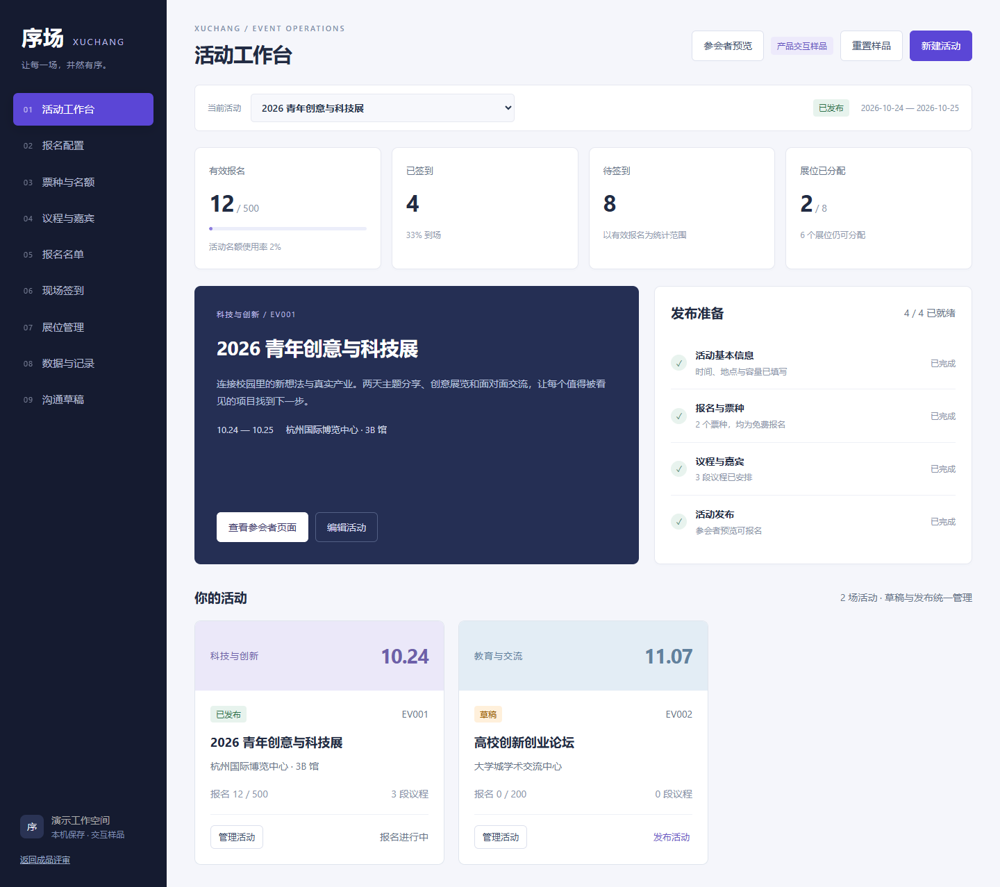
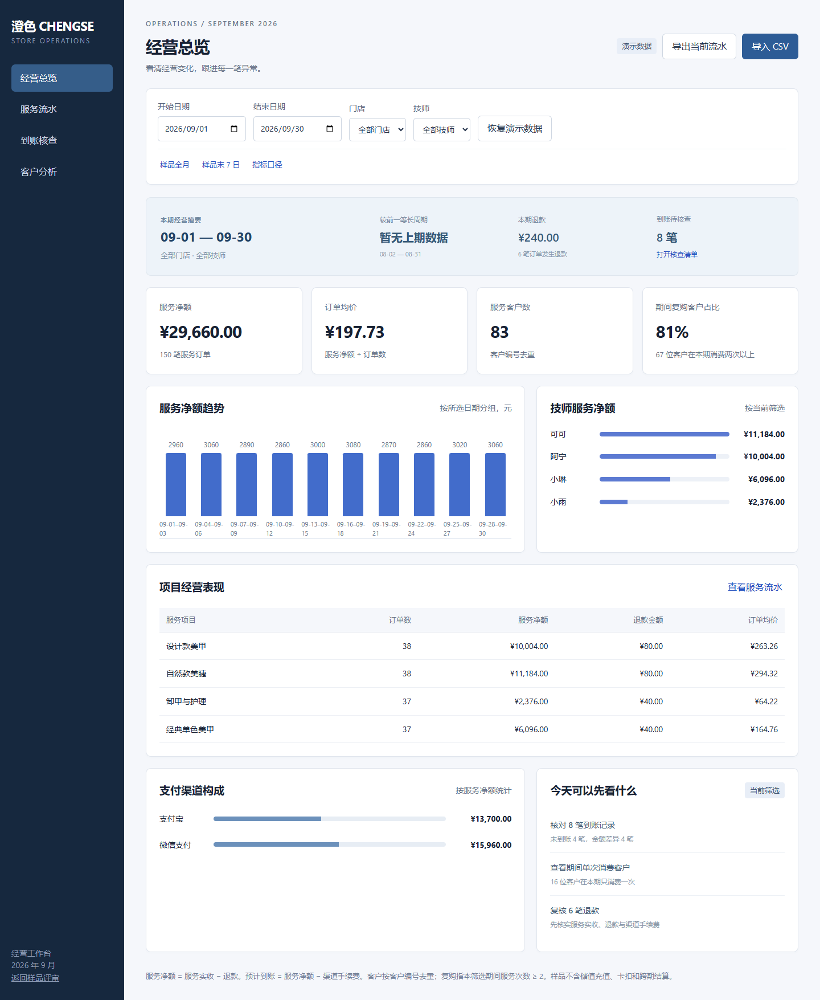

从能展示，到值得认真看一眼。
围绕真实接单场景，对比同类产品的公开功能，把可以在本机完成的改进做进三套样品。
01 / 序场会展：让主办方与参会者接上同一条流程
Eventbrite 官方报名功能强调活动页面、票种、自定义报名表和参会者管理；Cvent 官方会议管理介绍覆盖议程、嘉宾、报名、签到及参展商等模块；活动行官方签到指引展示现场查验和名单操作方式。这些资料共同提示：运营页需要与报名、凭证和入场动作连贯衔接。
| 维度 | 首版不足 | V2 已实现 | 正式项目仍需补充 |
|---|---|---|---|
| 活动准备 | 活动列表与发布按钮，准备状态不直观 | 工作台、四项准备清单、跨页面活动切换、资料编辑 | 负责人、时区、报名窗口与活动归档 |
| 票种与容量 | 只有活动总人数限制 | 独立免费票种、名额占用与剩余、总容量双重约束、重复手机号阻止 | 付费票、邀请码、审核与服务端并发容量控制 |
| 内容与议程 | 没有主题与嘉宾安排 | 活动简介、议程与负责人、同会场时间冲突校验、参会者页同步展示 | 嘉宾资料审核、议程删除、跨场馆与多时区规则 |
| 参会者体验 | 只有运营人员测试报名 | 完整参会者预览、填表报名、参会编号和凭证下载 | 公开链接、真实电子票与二维码验证 |
| 名单与签到 | 搜索、单个签到 | 状态和票种筛选、10 条分页、跨页选择与批量签到、撤销需原因、取消释放名额 | 权限校验、服务端审计、离线与多设备同步 |
| 展位与数据 | 8 个固定展位分配 | 展区示意、展位编辑与释放、导出、票种及单位分布、操作记录 | 真实场馆图纸、展位合同与收费 |
| 沟通 | 没有内容准备入口 | 确认、提醒与更新草稿，可选择受众和下载 | 短信或邮件供应商、授权与发送记录 |
| 视觉 | 灰阶低保真组件 | 深色侧栏、紫色强调、运营摘要、发布准备与独立参会者页面 | 按客户品牌重新确认颜色、字体和移动端信息优先级 |
适合展示的卖点：可以现场演示“报名 → 凭证 → 名单 → 签到 → 撤销 → 数据记录”。这证明的是流程设计和原型实现能力。当前 9 个模块是本机交互样品，不能作为生产 SaaS 对外收集资料。

02 / 澄色经营：把异常金额变成可以跟进的事项
Fresha 官方报表说明包含营收、团队表现、客户与财务活动；Vagaro 官方 Dashboard 说明呈现经营数据组件。对本次门店需求，关键是保持指标口径清楚，并让异常到账可核对、可记录、可导出。
| 维度 | 首版能力 | V2 已实现 | 边界 |
|---|---|---|---|
| 经营判断 | 净额、客户、技师、项目与趋势 | 本期摘要、等长上期比较、退款摘要、支付渠道构成 | 没有上期数据时明确显示缺失，不制造增长率 |
| 操作优先级 | 使用者自行寻找异常 | 由当前数据生成核查、客户和退款查看入口 | 属于查看建议，不自动联系客户或调整经营策略 |
| 异常核查 | 显示待到账与差额 | 8 笔异常、跟进人、核查备注、刷新保留、含备注的核查 CSV | 登记备注不修改银行到账，也不把异常自动改成正常 |
| 查找与筛选 | 日期、门店、技师筛选 | 全样品日期、末 7 日快捷按钮、流水与客户搜索 | 快捷范围基于已导入数据，搜索只过滤显示 |
| 解释与交付 | 公式 Excel 和示例 CSV | 页面内指标口径，加上本轮对比说明与关键流程截图 | Excel 核心公式保持首版口径，新增网页备注不自动写回 Excel |
适合第一单的范围：用一份脱敏 POS 导出与对应结算单，先做字段确认、净额与到账核查，再扩展提成、储值、跨期结算。相比直接承诺替代 Fresha 或 Vagaro，限定这一小段业务更容易明确验收标准。

03 / MASON METAL：帮助访客找到适合自己的款式
Mejuri 官方商品页提供尺码选择、材料与商品信息；Missoma 官方银戒系列提供系列浏览与选购相关信息。这里借鉴的是信息组织方式。品牌材料、库存、配送与售后承诺必须由 MASON METAL 自己确认。
| 维度 | 首版不足 | V2 已实现 | 内容真实性 |
|---|---|---|---|
| 商品图片 | 商品图使用主视觉局部裁切 | 保留原创主视觉，新增 3 张独立戒指概念图，统一灰石与银色风格 | AI 生成概念图不是客户真实商品摄影；手镯仍使用主视觉局部 |
| 发现商品 | 类别筛选 | 关键词搜索、价格排序、系列筛选、收藏与收藏筛选 | 收藏只保存在当前浏览器，不需要假账号 |
| 选择商品 | 简单详情与尺码 | 最多 3 款并排对比：价格、造型、风格、搭配及样品尺码 | 比对设计概念，不虚构重量、纯度、库存或用户评价 |
| 尺码与信任 | 尺码选择缺少参考 | 尺码参考弹窗、测量说明、宽戒圈适配提醒、来源链接 | 通用 US 尺码来自 Mejuri 参考，不代表 MASON 实物规格 |
| 购物袋 | 数量调整与清单下载 | 商品缩略图、直接移除、赠礼/讨论备注、含备注与小计的清单导出 | 没有下单、扣款或虚构免邮，运费与税费未计算 |
| 安装交付 | 子主题与 Elementor 模板 | 新增素材和交互同步进入 Astra 子主题，Elementor 继续加载配套模块 | 已检查静态结构与独立脚本；未在真实客户 WordPress 环境验收 |
适合展示的卖点：从第一屏视觉，到搜索、收藏、比较、选尺码和购物袋，访客有清楚的下一步。正式报价应先区分“品牌展示站”与“接通 WooCommerce 的交易站”，并拿到甲方指定的参考站。
体验 MASON METAL 新版 · 查看 WordPress 安装方式
04 / 如何拿这三份样品谈合作
| 优先 | 展示方式 | 小范围交付建议 | 需要客户提供 |
|---|---|---|---|
| 先谈门店报表 | 现场筛选、查看异常、下载公式模板 | 一个月、一种导出格式、明确指标与到账规则 | 脱敏 POS、结算单和字段解释 |
| 再谈会展原型 | 演示一条完整报名和入场流程 | 一个具体活动类型、一个业务迭代、页面与规则验收 | 实际运营流程、角色分工和原有产品 |
| 珠宝站按素材完整度推进 | 对照品牌参考站看视觉、浏览与商品选择 | 先确认展示站范围，再拆交易与支付的阶段 | 参考链接、品牌资料、真实 SKU 和网站测试环境 |
不建议根据这些样品承诺一周完成生产平台、保证成交或报价覆盖未知功能。样品已经做得更完整，但客户的真实接口、许可、数据和上线环境仍会决定最终工作量。